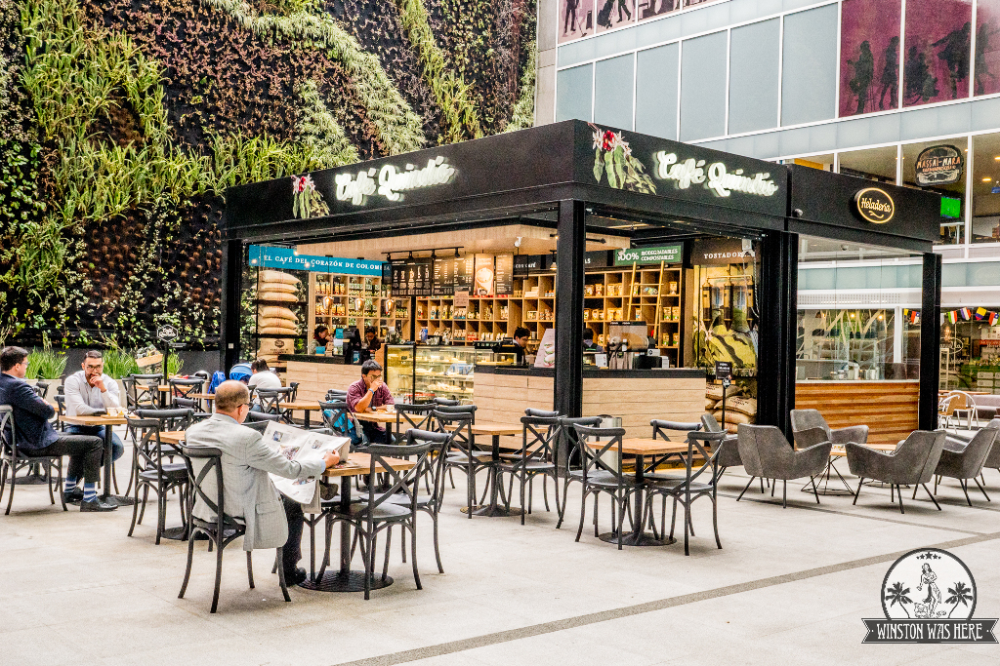

Cafe Quindio
el mejor cafe del quindio

Nosotros
el mejor cafe del quindio
Café Quindío S.A.S. es una empresa tostadora de café con 23 años de trayectoria y pionera en el desarrollo de productos derivados del famoso grano en el Quindío, Colombia. En este departamento se cosechan cerezas enriquecidas y clasificadas con técnicas
especiales que han hecho de Café Quindío una marca con prestigio en los paladares de los conocedores de café.
